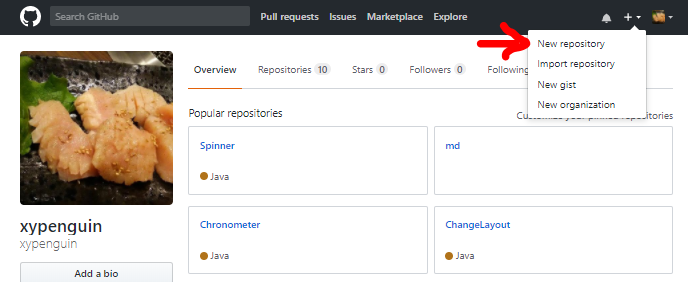
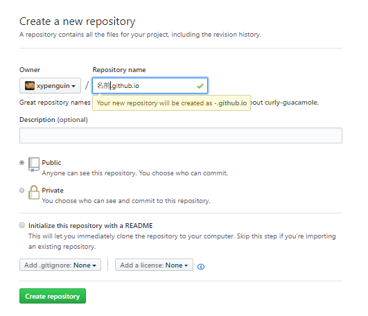
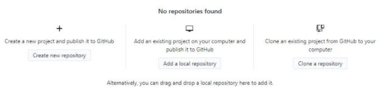
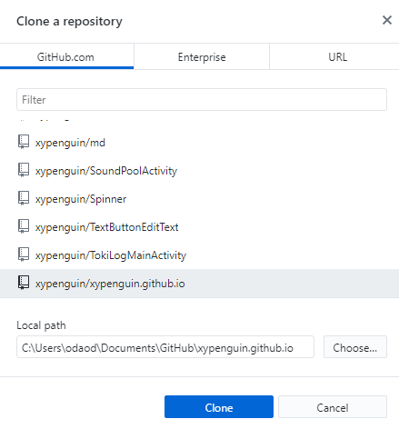

githubにログインして「New repository」をクリック。
repository（リポジトリ）とは制作物を置いておく場所のことだよ。機能的なフォルダみたいなものだよ。それをgithubのサイトに作るよ。
「Repository name」のところに「名前.github.io」と入力。名前はgithubに登録したusernameを書いてね。
書けたらページ下の「Create repository」をクリック。
これでリポジトリが作られたよ。
次に今githubに作ったリポジトリを自分のパソコンにコピーするよ。この作業をclone（クローン）と言うよ。
ここからは自分のパソコンの作業になるからgitHubDeskTopを使うよ。
gitHubDeskTopを起動して「Clone a repository」をクリック。
さっきgithubに作ったリポジトリがあるから選択。
「Local path」に書かれているアドレスの場所にリポジトリとしてフォルダが作られるよ。場所を変更する場合は「Choose...」をクリックして好きな場所にしてね。
「Clone」をクリックするとクローンされるよ。
GitHubDeskTopの公式ページで「Downlode for Windows(64bit)」をクリック